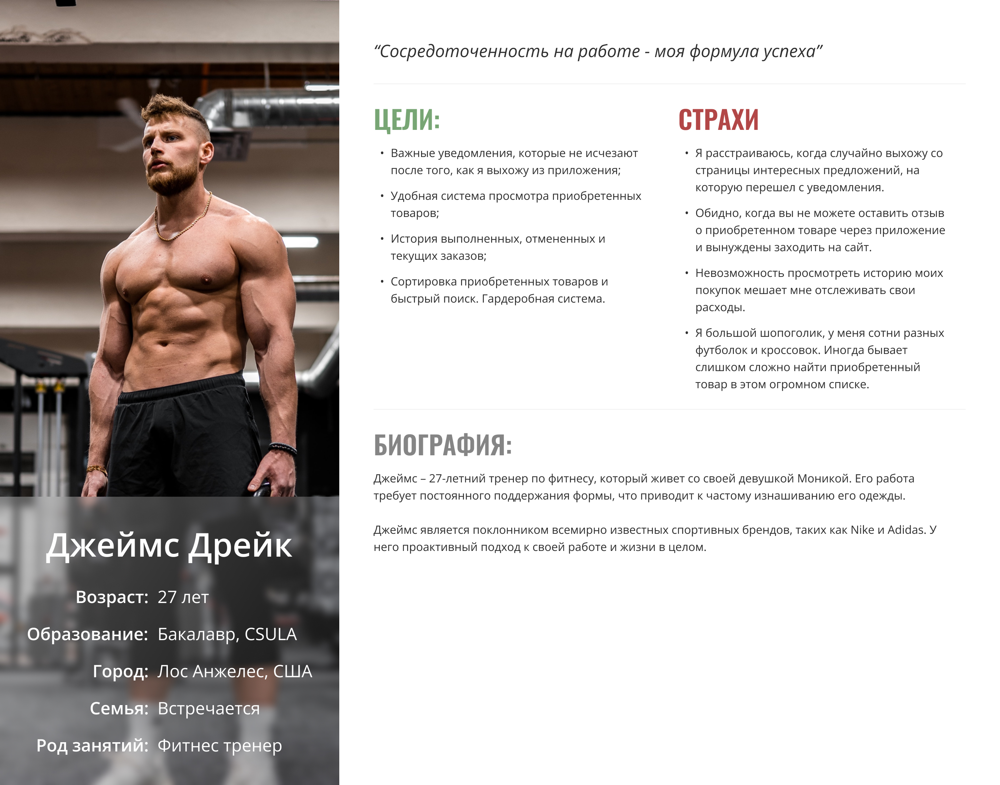
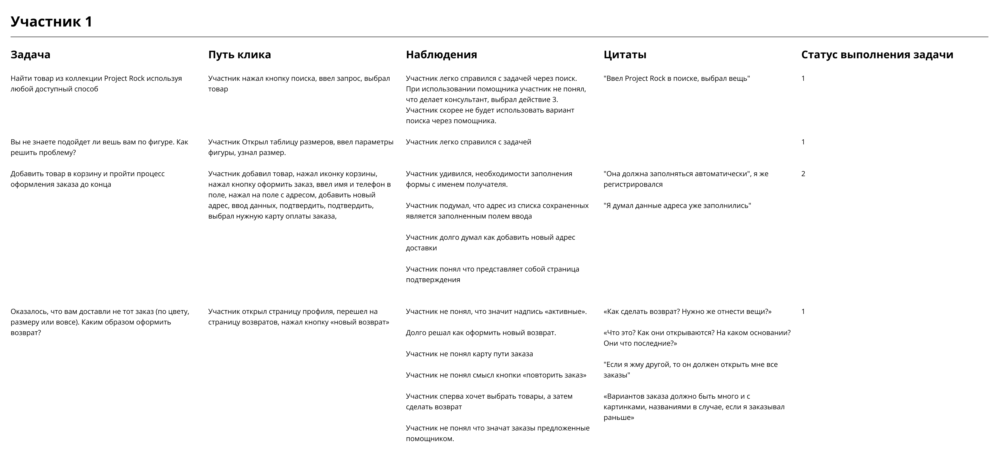
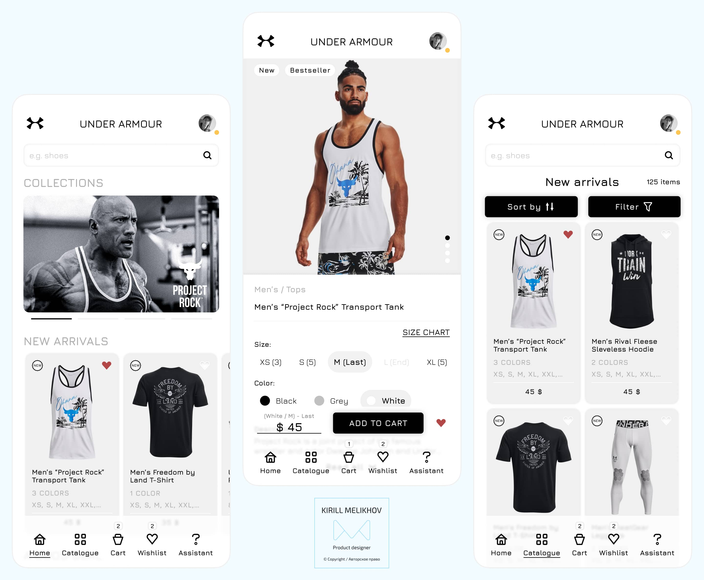
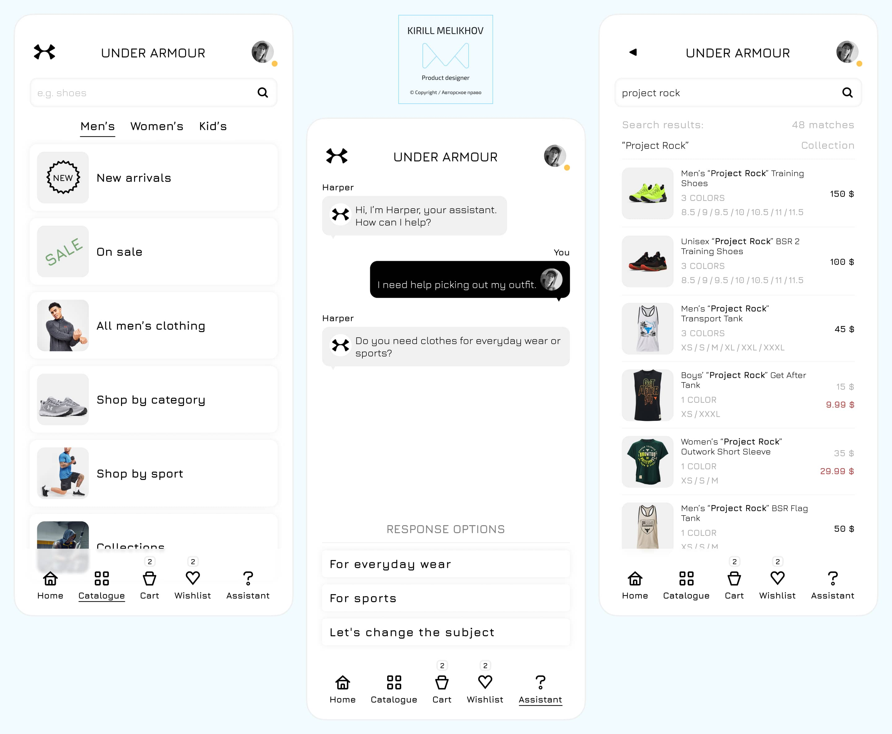
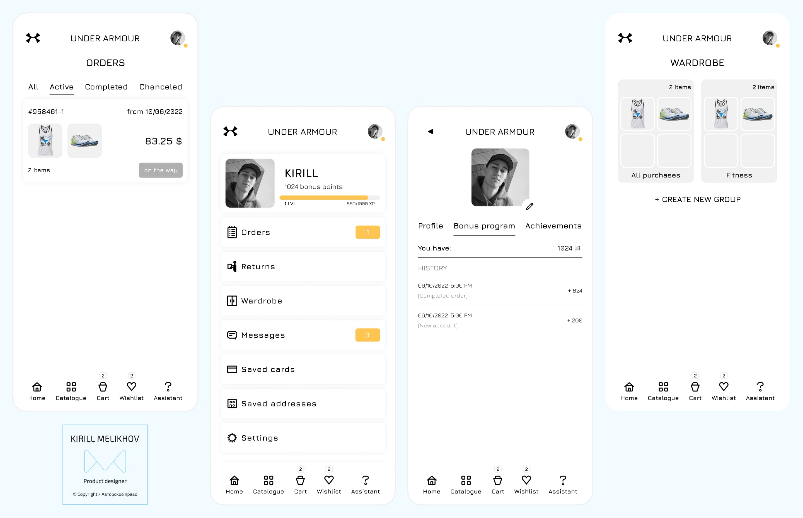

Under Armour" - всемирно признанный бренд спортивной одежды, известный своей высокоэффективной спортивной одеждой и аксессуарами. Располагая обширной клиентской базой и широким ассортиментом товаров, "Under Armour" осознает необходимость обеспечить своим клиентам беспрепятственный и увлекательный процесс совершения покупок. Чтобы достичь этого, компания решила заняться дизайном приложений, чтобы создать удобное в использовании и визуально привлекательное мобильное приложение.
Цели проекта
Основной целью проекта была разработка мобильного приложения для магазина спортивной одежды, в котором приоритетным является ориентированный на пользователя подход, который может похвастаться чистым и визуально привлекательным дизайном, улучшает общий пользовательский опыт, способствует повторному использованию и повышает вовлеченность пользователей.
Для достижения этой цели было тщательно продумано создание дизайна, который ставил бы пользователя в центр внимания. Принципы, ориентированные на пользователя, были использованы для обеспечения того, чтобы приложение без проблем удовлетворяло потребности и предпочтения своей целевой аудитории. Понимая мышление пользователя, его мотивацию и болевые точки, дизайн был направлен на обеспечение интуитивно понятного и эффективного просмотра, что облегчало пользователям поиск и покупку желаемой спортивной одежды.
В рамках проекта было определено несколько ключевых задач:
Улучшить пользовательский интерфейс. Цель состояла в том, чтобы улучшить пользовательский интерфейс приложения, сделав его более интуитивно понятным и удобным для пользователя. Это включало упрощение навигации и обеспечение простоты использования всего приложения. Оптимизировав интерфейс, пользователи смогли беспрепятственно просматривать различные функции и информацию и получать к ним доступ.
Упростить навигацию и использование. Цель состояла в том, чтобы сделать навигацию по приложению простой, гарантируя, что пользователи смогут быстро найти нужную информацию или продукты. Благодаря оптимизации потока пользователей и логической организации контента приложение стало более удобным для пользователя и эффективным.
Предоставить полезные функции и информацию. Основное внимание было уделено предоставлению ценных функций и информации внутри приложения. Это включало предоставление подробных описаний продуктов, руководств по подбору размеров, отзывов покупателей и другой соответствующей информации, которая помогала пользователям принимать обоснованные решения о покупке. Предлагая такие полезные функции и информацию, приложение стремилось улучшить общий пользовательский опыт.
Персонализированные рекомендации. Внедрение рекомендательной системы было важнейшей задачей. Используя предпочтения пользователей и их историю просмотренных товаров, приложение могло бы предоставлять персонализированные рекомендации. Эта функция была направлена на повышение вовлеченности пользователей, облегчение поиска продукта и, в конечном счете, повышение удовлетворенности клиентов.
Повысить лояльность и удержание клиентов. Цель состояла в том, чтобы повысить лояльность и удержание клиентов путем предоставления эксклюзивных предложений, скидок и рекламных акций в рамках приложения. Предоставляя пользователям приложения специальные стимулы, цель состояла в том, чтобы стимулировать повторное использование и создать ощущение эксклюзивности, тем самым укрепляя лояльность клиентов.
Реализовать полезные функции. Целью проекта было включение дополнительных функций, которые были бы ценны для будущих пользователей. Например, включение функции "гардероб" позволило бы пользователям сохранять и упорядочивать свои любимые товары или создавать комбинации одежды. Эти функции были направлены на повышение общей функциональности и полезности приложения.
Тематическое исследование
UX Research
Процесс проектирования начался с всестороннего исследования, направленного на получение глубокого представления о целевой аудитории Under Armour, а также анализа конкурентов компании. Благодаря интервью с целевой аудиторией и тщательному конкурентному анализу была получена ценная информация, выявившая болевые точки, предпочтения и возможности для улучшения.
В ходе конкурентного аудита было выявлено несколько заметных проблем. К ним относились сложные пользовательские потоки, мелкие и трудночитаемые шрифты, сложная навигация по каталогу, загроможденный дизайн и другие проблемы с удобством использования. Признание этих недостатков позволило применить целенаправленный подход к их устранению и совершенствованию в процессе проектирования.
Кроме того, при оценке конкурентов было выделено несколько сильных сторон. К ним относятся такие функции, как функции подгонки в дополненной реальности (AR), параметры настройки, такие как "Nike By You", которые позволяют пользователям создавать свои собственные дизайны, и возможности поиска товаров по фотографиям. Эти сильные стороны послужили ценными ориентирами и источниками вдохновения в процессе проектирования, подчеркнув успешные функции, которые можно было адаптировать и интегрировать в Under Armour.
"Персона, представляющая одну из групп пользователей приложения Under Armour"
Примечательно, что важно подчеркнуть, что ни один из конкурентов не предлагал функцию "гардероб", которая позволяет пользователям группировать ранее приобретенные товары. Эта уникальная функция предоставила Under Armour возможность выделиться и обеспечить дополнительную ценность для своих пользователей. Включив функцию гардероба, пользователи смогут удобно организовывать приобретенные товары и управлять ими, что улучшит их общее впечатление от покупок.
Благодаря проведению тщательных исследований, выявлению болевых точек, изучению сильных и слабых сторон конкурентов и выявлению неиспользованных возможностей процесс проектирования был информирован и управлялся. Цель состояла в том, чтобы создать ориентированное на пользователя и конкурентоспособное дизайнерское решение, отвечающее потребностям и предпочтениям целевой аудитории Under Armour и включающее инновационные функции, отличающие бренд от других.
Чтобы убедиться в удобстве использования и эффективности мобильного приложения интернет-магазина Under Armour, был проведен комплексный этап юзабилити-тестирования. Основная цель состояла в том, чтобы собрать ценные отзывы пользователей и аналитическую информацию для выявления любых проблем с удобством использования, болевых точек или областей, требующих улучшения дизайна и функциональности приложения.
"Тестирование юзабилити с одним из участников исследования"
На этапе юзабилити-тестирования была отобрана группа репрезентативных пользователей для взаимодействия с приложением. Этим пользователям были даны конкретные задания для выполнения, в то время как их взаимодействие и обратная связь тщательно отслеживались и записывались. Такой подход позволил выявить потенциальные проблемы или области, в которых приложение может не соответствовать ожиданиям пользователей.
Процесс юзабилити-тестирования позволил получить ценную информацию о пользовательском опыте, выявив любые трудности или разочарования, с которыми столкнулись участники. Были собраны отзывы и наблюдения пользователей, включая комментарии о понятности навигации, простоте поиска товара, процессе оформления заказа и общей удовлетворенности приложением. Эти выводы помогли точно определить конкретные области для улучшения, что позволило проводить итеративные доработки дизайна.
Финальный дизайн
Мобильное приложение интернет-магазина Under Armour демонстрирует современный и лаконичный минималистичный дизайн, который значительно улучшает пользовательский интерфейс и эффективно привлекает внимание к товарам магазина. Эстетика дизайна соответствует современным тенденциям дизайна, включая достаточное количество белого пространства, типографику и изображения для создания привлекательного внешнего вида.
Философия минималистского дизайна гарантирует, что интерфейс приложения оптимизирован и не загроможден. Устраняются ненужные визуальные элементы и отвлекающие факторы, что позволяет пользователям легко ориентироваться и сосредотачиваться на основных функциях и контенте. Такая простота обеспечивает бесперебойный пользовательский интерфейс, облегчая пользователям поиск нужных продуктов и взаимодействие с ними.

Визуальные элементы в дизайне тщательно продуманы, чтобы обеспечить баланс между эстетикой и функциональностью. В приложении используются элегантные и чистые визуальные эффекты, которые создают ощущение изысканности и профессионализма. Интуитивно понятная иконография используется для обеспечения четких и узнаваемых подсказок, облегчающих навигацию и повышающих удобство использования. Единая цветовая палитра усиливает индивидуальность бренда и обеспечивает целостный визуальный эффект во всем приложении.

В дополнение к современному и минималистичному дизайну мобильное приложение интернет-магазина Under Armour оснащено помощником на базе искусственного интеллекта, который улучшает пользовательский опыт. Помощник с искусственным интеллектом действует как виртуальный гид, предлагая персонализированные рекомендации, помогая в поиске товаров и предоставляя ценную информацию пользователям.
Используя возможности искусственного интеллекта, AI assistant повышает удобство, экономит время и повышает уровень обслуживания клиентов. Анализируя предпочтения пользователей, историю покупок и поведение в интернете, помощник предоставляет индивидуальные рекомендации по продуктам, гарантируя, что пользователи найдут товары, соответствующие их интересам и потребностям. Такой индивидуальный подход создает более привлекательный и актуальный опыт совершения покупок.
Помощник с искусственным интеллектом также помогает пользователям ориентироваться в приложении и находить нужные продукты. Благодаря обработке естественного языка и интеллектуальным алгоритмам поиска пользователи могут легко сообщать о своих предпочтениях и получать точные и эффективные результаты поиска. Это упрощает процесс совершения покупок и позволяет пользователям более эффективно находить то, что они ищут.
Кроме того, помощник с искусственным интеллектом предоставляет пользователям ценную информацию и инсайты. Будь то предоставление подробных описаний продуктов, советов по стилю или обмен информацией о последних тенденциях, помощник служит компетентным ресурсом, который помогает пользователю лучше понять продукты и бренд.

Чтобы улучшить пользовательский опыт и обеспечить дополнительное удобство, мобильное приложение интернет-магазина Under Armour включает в себя практичную функцию гардероба. Эта функция позволяет пользователям организовывать свои покупки в персонализированные коллекции или группы, облегчая управление одеждой и аксессуарами.
Функция "Гардероб" позволяет пользователям создавать пользовательские категории, соответствующие их конкретным потребностям, такие как спортивное снаряжение, предметы первой необходимости для гольфа или снаряжение для фитнеса. Группируя свои товары таким образом, пользователи могут быстро получить доступ к желаемым товарам и просмотреть их, экономя время и усилия при планировании и координации своих нарядов.
Функциональность гардероба выходит за рамки простой организации. Это позволяет пользователям получать исчерпывающий обзор своей одежды и аксессуаров, позволяя им оценивать свою коллекцию и принимать обоснованные решения при совершении дополнительных покупок. Независимо от того, идет ли речь о выборе подходящей одежды для конкретного мероприятия или обеспечении их необходимым оборудованием, функция гардероба упрощает процесс и повышает эффективность работы пользователей.
Вывод
В заключение можно сказать, что дизайн мобильного приложения для интернет-магазина Under Armour успешно достиг своих целей. Благодаря всесторонним исследованиям, итеративным процессам проектирования и юзабилити-тестированию приложение теперь предлагает современный и интуитивно понятный минималистичный дизайн, который соответствует фирменному стилю Under Armour, обеспечивая при этом визуально привлекательный интерфейс.
Интеграция помощника на базе искусственного интеллекта привносит индивидуальный подход в работу пользователя, предоставляя индивидуальные рекомендации по продуктам и помощь. Это повышает удобство и вовлеченность, позволяя пользователям делать осознанный выбор и укрепляя более глубокую связь с брендом. Кроме того, включение функции "гардероб" позволяет пользователям классифицировать свои покупки, способствуя организации и планированию своей одежды и аксессуаров.
В целом, окончательный дизайн мобильного приложения Under Armour демонстрирует мощь ориентированного на пользователя дизайна и интеграцию инновационных функций. Это не только отвечает потребностям и предпочтениям целевой аудитории Under Armour, но и повышает коэффициент конверсии, удовлетворенность клиентов и лояльность к бренду.
Обеспечивая плавный и приятный процесс совершения покупок, приложение служит свидетельством успешного сочетания дизайна, технологий и клиентоориентированности. Это позиционирует Under Armour как лидера на цифровом рынке, позволяя им налаживать значимые связи с клиентами, стимулировать продажи и еще больше укреплять свой бренд в сфере мобильной коммерции.